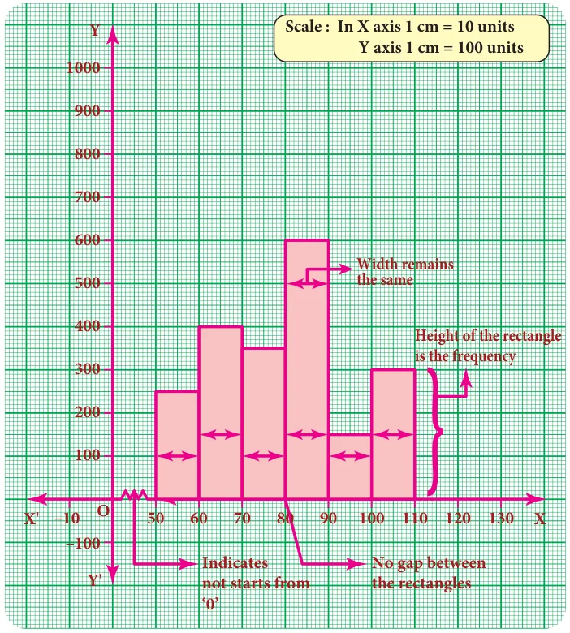
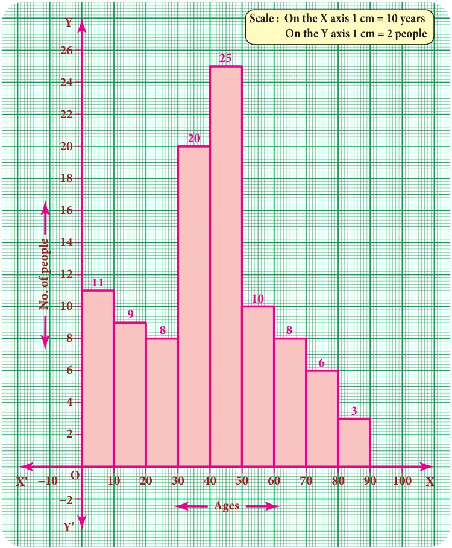
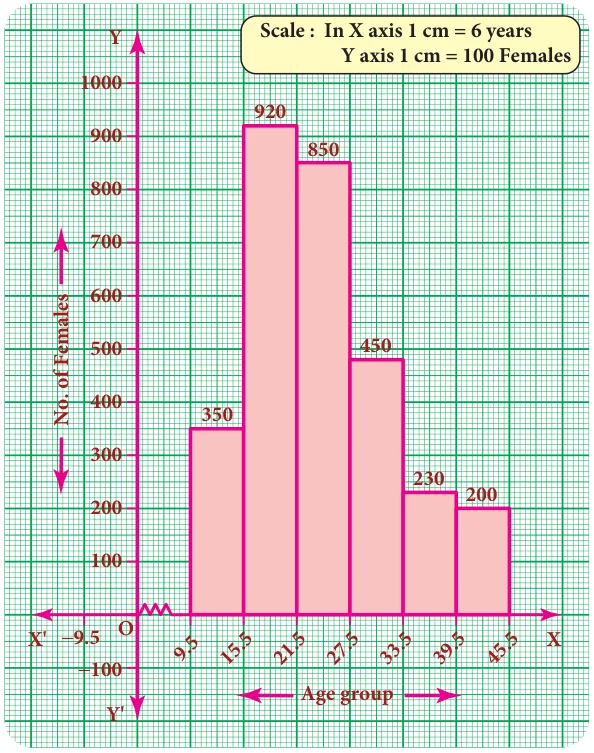
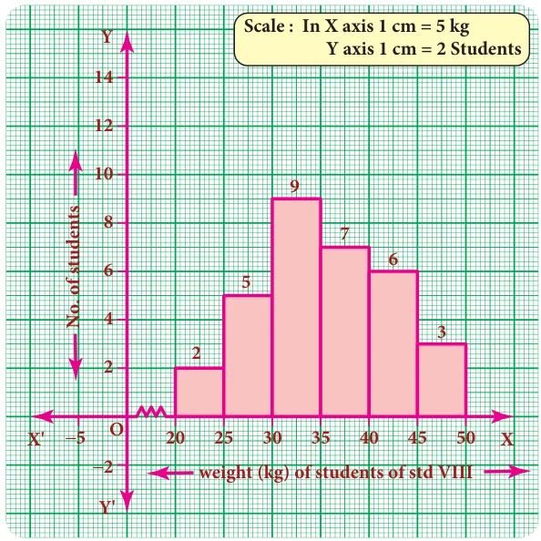
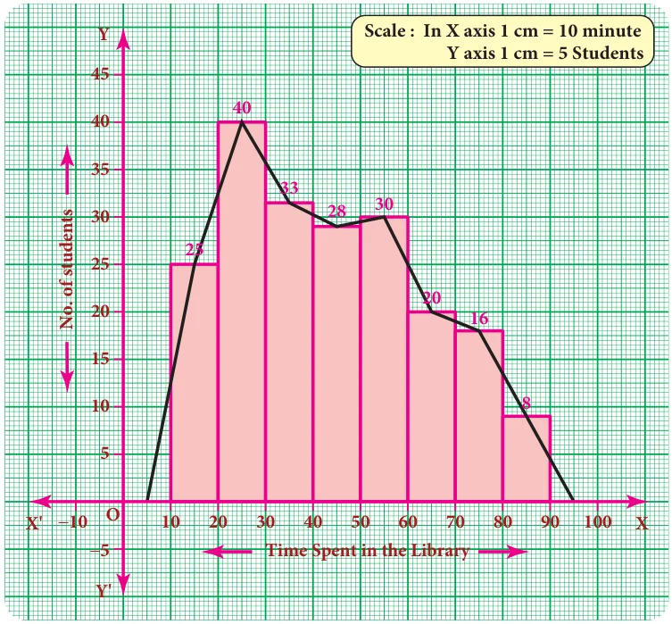
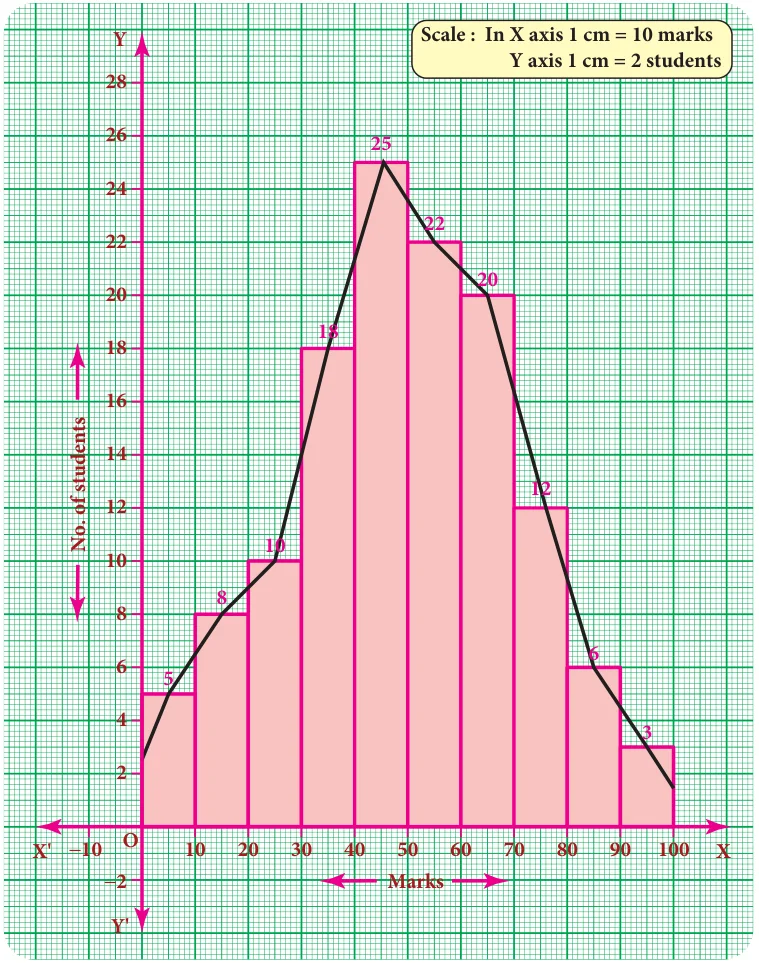
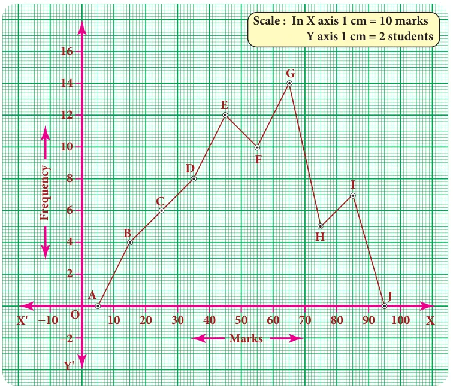

The Line graph, Bar graph, Pictograph and the Pie chart are the graphical representations of the frequency for ungrouped data. Histogram, Frequency polygon, Frequency curve, Cumulative frequency curves (Ogives) are some of the graphical representations of the frequency distribution for grouped data.
In this class, we are going to represent the grouped data frequency by Histogram and Frequency polygon only. You will learn the other type of representations in the higher classes.

6.4.1 Histogram

A histogram is a graph of a continuous frequency distribution. Histogram contains a set of rectangles, the base of which is the length of the class interval and the frequency in each class interval is its height. i.e the class intervals are represented on the horizontal axis (x- axis) and the frequencies are represented on the vertical axis (y-axis).
The area of each rectangle is proportional to the frequency in the respective class interval and the total area of the histogram is proportional to the total frequency. Because of the continuous frequency distribution, the rectangles are placed continuously side by side with no gap between adjacent rectangles.
Steps to construct a Histogram:
- Represent the data in the continuous form (exclusive form) if it is in discontinuous form (inclusive form) by converting it using the adjustment factor.
- Select the appropriate units along the x-axis and y-axis.
- Plot the lower limits of all class interval on the x–axis.
- Plot the frequencies of the distribution on the y – axis.
- Construct the rectangles with class intervals as bases and corresponding frequencies as heights. Each class has lower and upper values. This gives us two equal vertical lines representing the frequencies. The upper ends of the lines are joined together and this process will give us rectangles.
Note
Differences between a Bar graph and a Histogram
| Bar graph | Histogram | |
|---|---|---|
| 1 | Used for Ungrouped data | Used for Grouped data |
| 2 | Gap between the bars | No gap between rectangles |
| 3 | Height of each bar is important and not its width | Height and width of each rectangle are equally important |
6.4.1 (i) Construction of a histogram for continuous frequency distribution:
Example 6.6
Draw a histogram for the following table which represents the age groups from 100 people in a village.
| Ages | 0-10 | 10-20 | 20-30 | 30-40 | 40-50 | 50-60 | 60-70 | 70-80 | 80-90 |
|---|---|---|---|---|---|---|---|---|---|
| Number of people | 11 | 9 | 8 | 20 | 25 | 10 | 8 | 6 | 3 |
Solution:

The given data is a continuous frequency distribution. The class intervals are drawn on x-axis and their respective frequencies on y-axis. Classes (ages) and its frequencies (number of people) are taken together to form a rectangle.
The histogram is constructed as given below.
Note
If class intervals do not start from ‘0’ then, it is indicated by drawing a kink (Zig-Zag) mark (\(\wedge\!\wedge\!\wedge\!\_\)) on the x-axis near the origin. If necessary, the kink mark (\(\wedge\!\wedge\!\wedge\!\_\)) may be made on y-axis or on both the axes. i.e it indicates that we do not have data starting from the origin (O)
6.4.1 (ii) Construction of histogram for discontinuous frequency distribution:
Example 6.7
The following table gives the number of literate females in the age group 10 to 45 years in a town.
| Age group | 10-15 | 16-21 | 22-27 | 28-33 | 34-39 | 40-45 |
|---|---|---|---|---|---|---|
| No. of females | 350 | 920 | 850 | 480 | 230 | 200 |
Draw a histogram to represent the above data
Solution:

The given distribution is discontinuous. If we represent the given data as it is by a graph we shall get a bar graph, as there will be gaps in between the classes. So, convert this into a continuous distribution using the adjustment factor 0.5.
The first class interval can be written as 9.5-15.5 and the remaining class intervals are changed in the same way. There are no changes in frequencies.
The new continuous frequency table is
| Age group | 9.5-15.5 | 15.5-21.5 | 21.5-27.5 | 27.5-33.5 | 33.5-39.5 | 39.5-45.5 |
|---|---|---|---|---|---|---|
| No of females | 350 | 920 | 830 | 480 | 230 | 200 |
Example 6.8
Observe the given histogram and answer the following questions
Hint: Under weight: less than \(30\,kg;\) Normal weight: \(30\) to \(45\,kg;\) Obese: More than \(45\,kg\)

- What information does the histogram represent?
- Which group has maximum number of students?
- How many of them are under weight?
- How many students are obese?
- How many students are in the weight group of 30-40 kg?
Solution:
- The histogram represents the collection of weight from std VIII.
- There are maximum 9 students in 30-35 kg weight.
- There are \(7\,(= 2 + 5)\) students who are under weight.
- There are 3 students who are obese.
- There are \(16\,(= 9 + 7)\) students in the 30-40 kg weight group.
6.4.2 Frequency Polygon
A frequency polygon is a line graph for the graphical representation of the frequency distribution. If we mark the midpoints on the top of the rectangles in a histogram and join them by straight lines, the figure so formed is called a frequency polygon. It is called a polygon as it consists of a number of lines as the sides of a polygon.
A frequency polygon is useful in comparing two or more frequency distributions. A frequency polygon for a grouped frequency distribution can be constructed in two ways.
- Using a histogram
- Without using a histogram
6.4.2 (i) To construct a frequency polygon using a histogram:
- Draw a histogram from the given data.
- Join the consecutive midpoints of the upper sides of the adjacent rectangles of the histogram by the line segments.
- It is assumed that the class interval preceding the first rectangle and the class interval succeeding the last rectangle exists in the histogram and the frequency of each extreme class interval is zero. These class intervals are known as imagined class intervals.
- To get frequency polygon, join the midpoints of these imagined classes with the corresponding midpoints of the upper sides of the first and last rectangles of the histogram.
Example 6.9
The following is the distribution of time spent in the library by students in a school.
| Time spent (in minutes) | 10-20 | 20-30 | 30-40 | 40-50 | 50-60 | 60-70 | 70-80 | 80-90 |
|---|---|---|---|---|---|---|---|---|
| Number of Students | 25 | 40 | 33 | 28 | 30 | 20 | 16 | 8 |
Draw a frequency polygon using histogram.
Solution:

Represent the time spent in the library along x- axis and number of students along the y–axis.
Draw a histogram for the given data. Now, mark the midpoints of the upper sides of the consecutive rectangles. Also mark the midpoints of two imagined class intervals 0-10 and 90-100 whose frequency is 0 on x- axis. Now, join all the midpoints with the help of ruler. We get a frequency polygon imposed on the histogram.
Note
Sometimes imagined class intervals do not exist. For example, in case of marks obtained by the students in a test, we cannot go below zero and beyond maximum marks on the two sides. In such cases, the extreme line segments meet at the mid points of the vertical left and right sides of first and last rectangles respectively.
Example 6.10
Draw a frequency polygon for the following data using histogram.
| Marks | 0-10 | 10-20 | 20-30 | 30-40 | 40-50 | 50-60 | 60-70 | 70-80 | 80-90 | 90-100 |
|---|---|---|---|---|---|---|---|---|---|---|
| Number of students | 5 | 8 | 10 | 18 | 25 | 22 | 20 | 13 | 6 | 3 |
Solution:

Mark the class intervals along the x-axis and the number of students along the y-axis . Draw a histogram for the given data and mark the midpoints of the rectangles and join them by lines. We get frequency polygon. Note that the first and last edges of the frequency polygon meet at the mid points of the left and right vertical edges of first and last rectangles. Because imagined class intervals do not exist in the marks (refer the above note).
6.4.2 (ii) To draw a frequency polygon without using a histogram:
- Find the midpoints of the class intervals and tabulate it.
- Mark the midpoints of the class intervals on x-axis and frequencies on y-axis.
- Plot the points corresponding to the frequencies at each midpoints.
- Join the points using a ruler, to get the frequency polygon.
Example 6.11
Draw a frequency polygon for the following data without using histogram.
| Class interval (Marks) | 10-20 | 20-30 | 30-40 | 40-50 | 50-60 | 60-70 | 70-80 | 80-90 |
|---|---|---|---|---|---|---|---|---|
| Frequency | 4 | 6 | 8 | 12 | 10 | 14 | 5 | 7 |
Solution:
Find the midpoint of the class intervals and tabulate it.
| Class interval ( C.I) | Mid point \((x)\) | Frequency \((f)\) |
|---|---|---|
| \(10 - 20\) | 15 | 4 |
| \(20 - 30\) | 25 | 6 |
| \(30 - 40\) | 35 | 8 |
| \(40 - 50\) | 45 | 12 |
| \(50 - 60\) | 55 | 10 |
| \(60 - 70\) | 65 | 14 |
| \(70 - 80\) | 75 | 5 |
| \(80 - 90\) | 85 | 7 |

The points are \(A(5,0)\) \(B(15,4)\) \(C(25,6)\) \(D(35,8)\) \(E(45,12)\) \(F(55,10)\) \(G(65,14)\) \(H(75,5)\) \(I(85,7)\) \(J(95,0)\).
In the graph sheet, mark the midpoints along the x- axis and the frequency along the y- axis.
We take the imagined class as \(0 - 10\) at the beginning and \(90 - 100\) at the end , each with frequency ‘zero’.
From the table, plot the points. We draw the line segments AB, BC, CD, DE, EF, FG, GH, HI, IJ to obtain the required frequency polygon ABCDEFGHIJ.